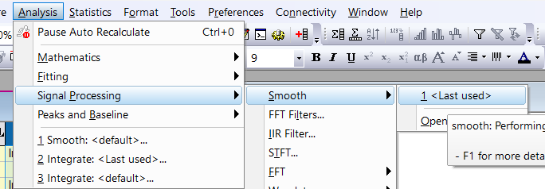
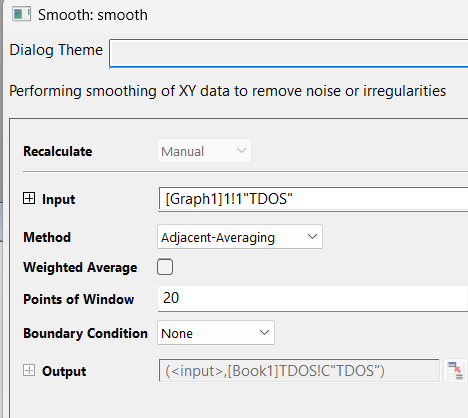

İki adımda yapılır: önce öz-tutarlı hesapla CHGCAR üretilir, sonra bu CHGCAR ve iki kat k-noktasıyla DOS hesabı yapılıp vaspkit ile TDOS.dat alınır; grafik Origin'de düzeltilir.
1. adım klasöründe şu dosyalar bulunur:
System = graphene PREC = Normal ENCUT = 600 ISMEAR = 0 SIGMA = 0.01 EDIFF = 1E-8 ISPIN = 1 IBRION = 2 ALGO = Normal NBANDS = 32 IVDW = 1
| Etiket | Değer | Anlamı |
|---|---|---|
System | graphene | Hesaba verilen ad (etiket); hesabı etkilemez. |
PREC | Normal | Hesabın genel kesinlik (precision) modu. |
ENCUT | 600 | Düzlem dalga taban kümesi için kesme enerjisi (eV). |
ISMEAR | 0 | Kısmi doluluğun belirlenme yöntemi; 0: Gauss yayılması (Gaussian smearing). |
SIGMA | 0.01 | Yayılmanın genişliği (eV). |
EDIFF | 1E-8 | Elektronik SC döngüsünün durma ölçütü. |
ISPIN | 1 | Spin polarize olmayan hesap. |
IBRION | 2 | İyon gevşetmesi için eşlenik gradyan algoritması. |
ALGO | Normal | Elektronik minimizasyon algoritması. |
NBANDS | 32 | Hesaba katılan bant sayısı. |
IVDW | 1 | Van der Waals düzeltmesi (DFT-D2 yöntemi). |
Kaynakta bu etiketler için ayrıca bir açıklama verilmemiştir; yukarıdaki anlamlar VASP belgesinden alınmıştır.
New structure
1.00000000000000
3.7336931351147573 0.0000000000000562 0.0000000000000000
-1.8668465675072803 3.2334731048878185 0.0000000000000000
0.0000000000000000 0.0000000000000000 20.0000000000000000
S Ga Se
1 2 2
Direct
0.6666669849999991 0.3333329860000021 0.5157403177336235
0.3333329860000021 0.6666669849999991 0.5906097720920584
0.6666669849999991 0.3333329860000021 0.4047997643535055
0.0000000000000000 0.0000000000000000 0.6548513598516337
0.0000000000000000 0.0000000000000000 0.3455987739691793
0.00000000E+00 0.00000000E+00 0.00000000E+00
0.00000000E+00 0.00000000E+00 0.00000000E+00
0.00000000E+00 0.00000000E+00 0.00000000E+00
0.00000000E+00 0.00000000E+00 0.00000000E+00
0.00000000E+00 0.00000000E+00 0.00000000E+00
k-points 0 Gamma 16 16 1 0. 0. 0.
Otomatik, Γ merkezli 16 × 16 × 1 k-noktası ızgarası.
CHGCAR dosyasını 2. adım hesaplarını yapacağınız klasöre aktarın!2. adım klasöründe şu dosyalar bulunur:
System = SnSSe PREC = Normal ISPIN = 1 ENCUT = 520 EDIFF = 1E-06 IBRION = 2 NEDOS = 4000 LORBIT = 11 ICHARG = 11 NBANDS = 96 ISMEAR = 0 IVDW = 1 ALGO = Normal SIGMA = 0.01
| 1. adıma göre fark | Adım 1 | Adım 2 | Anlamı |
|---|---|---|---|
ENCUT | 600 | 520 | Kesme enerjisi (eV). |
EDIFF | 1E-8 | 1E-06 | SC döngüsünün durma ölçütü. |
NBANDS | 32 | 96 | Bant sayısı. |
NEDOS | (yok) | 4000 | DOS hesabında kullanılan enerji noktası sayısı. |
LORBIT | (yok) | 11 | Atom ve lm-orbital bazında ayrıştırılmış çıktı (PROCAR, DOSCAR) yazdırır. |
ICHARG | (yok) | 11 | Yük yoğunluğu CHGCAR dosyasından okunur ve sabit tutulur; yalnızca özdeğerler hesaplanır (öz-tutarlı olmayan hesap). |
System | graphene | SnSSe | Yalnızca etiket. |
Diğer etiketler 1. adımla aynıdır: PREC = Normal, ISPIN = 1, IBRION = 2, ISMEAR = 0, IVDW = 1, ALGO = Normal, SIGMA = 0.01.
ENCUT = 600, 2. adımın INCAR'ında ENCUT = 520 yazılıdır. İki değer de ekran görüntüsünden okunmuştur.k-points 0 Gamma 32 32 1 0. 0. 0.
Izgara, 1. adımdaki 16 16 1 değerinin iki katıdır (32 32 1).
1. adımdaki POSCAR ile aynıdır:
New structure
1.00000000000000
3.7336931351147573 0.0000000000000562 0.0000000000000000
-1.8668465675072803 3.2334731048878185 0.0000000000000000
0.0000000000000000 0.0000000000000000 20.0000000000000000
S Ga Se
1 2 2
Direct
0.6666669849999991 0.3333329860000021 0.5157403177336235
0.3333329860000021 0.6666669849999991 0.5906097720920584
0.6666669849999991 0.3333329860000021 0.4047997643535055
0.0000000000000000 0.0000000000000000 0.6548513598516337
0.0000000000000000 0.0000000000000000 0.3455987739691793
0.00000000E+00 0.00000000E+00 0.00000000E+00
0.00000000E+00 0.00000000E+00 0.00000000E+00
0.00000000E+00 0.00000000E+00 0.00000000E+00
0.00000000E+00 0.00000000E+00 0.00000000E+00
0.00000000E+00 0.00000000E+00 0.00000000E+00
Kaynaktaki not: "VASPKIT: 11 111 yap TDOS.DAT çizdir". Yani vaspkit'te sırasıyla şu kodlar girilir ve toplam DOS verisi TDOS.dat dosyasına yazılır:
11 (Density-of-States).111.TDOS.dat dosyasını grafik çizimi için kullanın.TDOS.dat verisi Origin'e aktarılır ve veriyi bozmayacak şekilde yumuşatılır (smooth).
TDOS.dat verilerini Origin'e aktarın.Analysis → Signal Processing → Smooth yolunu izleyin (aşağıdaki şekil).
| Ayar | Değer |
|---|---|
| Recalculate | Manual |
| Input | [Graph1]1!1"TDOS" |
| Method | Adjacent-Averaging |
| Weighted Average | işaretsiz |
| Points of Window | 20 |
| Boundary Condition | None |
| Output | (<input>,[Book1]TDOS!C"TDOS") |
Pencere, "Performing smoothing of XY data to remove noise or irregularities" açıklamasıyla gelir.

Grafiği düzelttikten sonra eksenler şöyle adlandırılır:
| Eksen | Ad |
|---|---|
| Sol (y) | Density of States (DOS) |
| Alt (x) | Energy (eV) |
System etiketi 1. adımda graphene, 2. adımda SnSSe yazılıdır; POSCAR'ın başlığı New structure, elementleri S, Ga, Se'dir. System yalnızca bir etikettir; hesabı etkilemez.